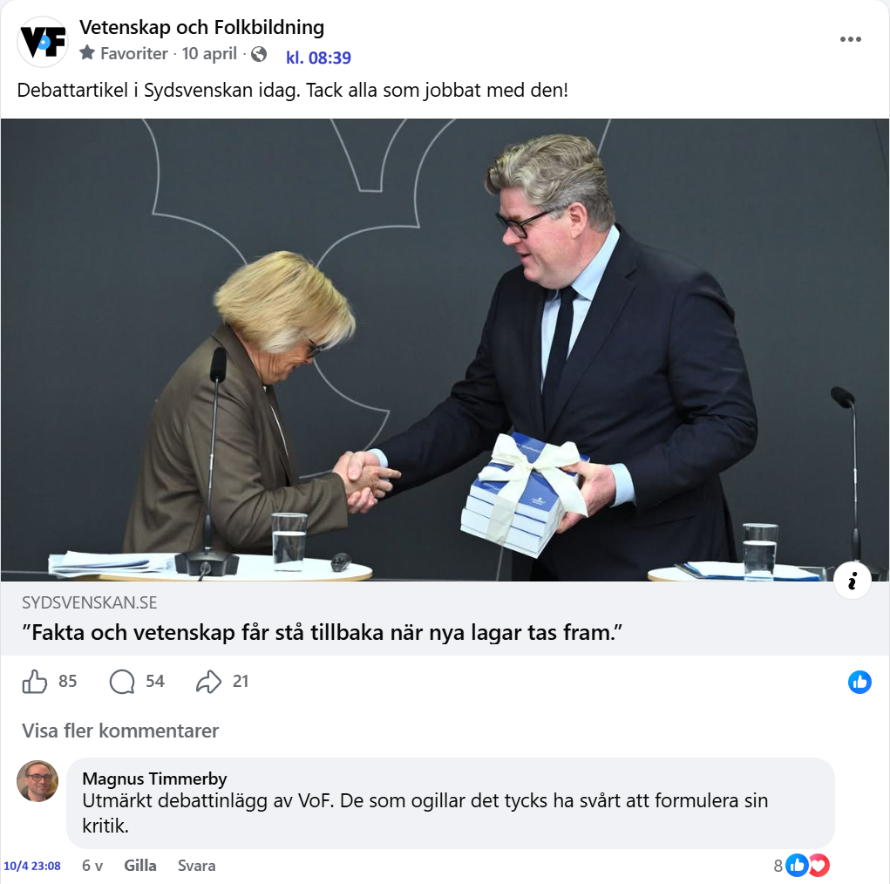
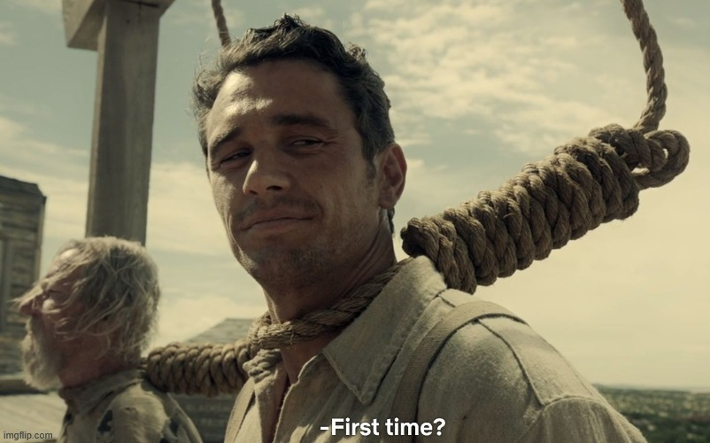

Debattartikel i Sydsvenskan idag. Tack alla som jobbat med den!
SYDSVENSKAN.SE
"Fakta och vetenskap får stå tillbaka när nya lagar tas fram."
Vetenskap och Folkbildning · facebookinlägg 10 april 2026
VoF publicerade en länk till debattartikeln om straffrättsutredningen. 54 kommentarer, 10–15 april.

Debattartikel i Sydsvenskan idag. Tack alla som jobbat med den!
SYDSVENSKAN.SE
"Fakta och vetenskap får stå tillbaka när nya lagar tas fram."
Kommentarer · 10 april kl 11:40–20:27
Svensk narkotikapolitik:

Så då är det alltså dags att gå ut ur VoF.
Magnus Karperyd Gjorde detsamma. Tror att föreningen gynnas av att vara vänster, men jag vill inte vara en del av det.
Problemet här är egentligen inte att de skrivit en politisk snarare än faktabaserad debattartikel. Problemet är att de inte förstått problemet. Lagrådets uppgift är inte att likt socialstyrelsen verka för saker som är evidensbaserade eller har beprövad erfarenhet. Så lagrådets kritik är helt enkelt ett metodfel hos lagrådet. Att då lyfta fram ett metodfel som argument för en politisk uppfattning är definitivt varken vetenskapligt eller folkbildande. Om man undrar över vilket uppdrag lagrådet har kan man gå in på deras hemsida och läsa om det, något som författarna borde gjort innan de skrev sin agitation.
Magnus Karperyd det är ju tyvärr väldigt vanligt att folk inte förstår vad lagrådets uppdrag är eller, för den delen, vad lagrådets kritik har gått ut på när sådan har givits.
Jag gjorde samma val av samma orsak för många år sedan. Det kändes jobbigt men ändå rätt. Vetenskap och skeptisism skall vara konsekvensneutral, inte politiskt marinerad. 😕
Jesper Johag har du läst texten ens?
Ja.
Magnus Karperyd jag är förvirrad. Menar du att politik INTE bör bygga på forskning?Eller att politik bygger på fel forskning? För min förhoppning är ju att politik SKA bygga på forskning. Alltid.
Politik handlar i grunden om att hantera målkonflikter. Att väga värderingar mot varandra.
Magnus Karperyd fast jag vill ju att värderingarna ska baseras på forskning.
Återkom när forskningen definierat "rättvisa"...
Att man förespråkar forskning som gynnar gärningsmännen, helt okommenterat att kriminaliteten minskar, är att tala från ett visst privilegium. Om nu VoF ska ha ett politiskt narrativ i stället för ett vetenskapligt, borde klokare personer sitta bakom spakarna.
Anders Hesselbom kan du utveckla hur du resonerar för att komma till den slutsatsen?
Lina Tebbla Fd Hedman Till att börja med har antalet skjutningar minskat rejält.
Anders Hesselbom och det beror på vad då?
Henrik Hoffström Kompetens och goda beslut.
Anders Hesselbom vad består kompetensen i och vilka beslut.
Inget snömos tack. Utgår ifrån att du reder ut källhänvisning.
Anders Hesselbom Säker på det? Inte så att någon sida vunnit något gängkrig och det lugnat ner sig av den anledningen?
Henrik Hoffström Det finns forskning på att inlåsta skyttar inte är ute på stan och mördar folk.
Anders Hesselbom Det finns forskning på att om en skytt försvinner i en pågående konflikt rekryterar gängledningen raskt en ny. Du verkar se världen genom ideologiska glasögon.
Henrik Hoffström Det är inte nödvändigtvis sant. Finland har lyckats hålla gängkriminaliteten borta genom hårda straff. Men självklart har man ideologiska glasögon på sig, och dina, gärningsmannaperspektivet, är ganska populära i Sverige. Brottsoffersperspektivet, som jag ser, är mer vanligt i t.ex. Finland.
Låt mig förtydliga mig själv. Vad i vår text fick dig att tro att:
1) Vi förespråkar forskning som gynnar gärningsmän?
2) vilket privilegium tänker du att vi har som leder till att våra slutsatser blir ogiltiga?
3) På vilket sätt är det ett politiskt narrativ?
4) vem är det som inte är klok? Vem borde sitta bakom spakarna? Och i så fall vad skulle då göras istället?
Lina Tebbla Fd Hedman Finns gott om forskning som visar på motsatsen. Du, ni utgår ifrån gärningsmannens perspektiv, så det blir fel från början om man vill se till allmänhetens bästa, åtminstone på kort sikt.
Simon Wiktorsson oavsett vad forskningsfältet säger. Vad i debattartikeln säger att vi som skribenter tar gärningsmannens sida?
Valrörelsen har börjat!
Kommentarer · 10 april 23:08 och vidare
Utmärkt debattinlägg av VoF. De som ogillar det tycks ha svårt att formulera sin kritik.
Mördare mördar färre när de sitter i fängelse. Våldtäktsmän våldtar färre när de sitter i fängelse.
Det är enkelt att forska sig till.
Jacob Mattsson Om man förespråkar individualprevention (som är argumentet du använder) är rimligaste slutsatsen dödsstraff.
En död person begår inga brott.
Pratar vi däremot allmänprevenation tyder allt på att stränga straff för vardagsbrottslighet (fortkörning och liknande) faktiskt fungerar. Svensson vill inte riskera tio år i fängelse för att ha kört för fort.
Sen förstår jag inte vad ditt inlägg har med artikeln att göra, där det förespråkas att politiska beslut ska vara välgrundade.
Linda Strand Lundberg lite unket att dra det till dödsstraff. Det har diverse nackdelar.
Förutom det värderingsmässiga.
Mattias Olsson Jag redogjorde för några grundläggande straffrättsteorier.
Dödsstraff är en irrelevant/dålig allmänpreventiv åtgärd mot grova våldsbrott (se populationsstudier).
Samma slags studier kan användas för att titta på utfall av andra straff, såsom längre fängelsestraff.
Om argumentet däremot är att en inlåst person inte begår nya brott är det individualpreventiva åtgärder som efterfrågas. Dödsstraff är den mest effektiva av alla.
Den grundläggande kurslitteratur jag läst rörande detta är "Straffrättens påföljdslära".
Din kommentar om unkenheten i att dra det till dödsstraff kan riktas mot författarna. (Jag är givetvis enig med dig om dödsstraffets problematik och det går helt stick i stäv med mina personliga värderingar, säkert de flesta svenskars värderingar)
Det hade varit perfekt.
Det bästa med vänstermänniskor är att de alltid avslöjar sig då de inte klarar av att skilja på sin politik och resten av deras värv.
Peter Samir Ek vad är deras värv och varför är det relevant?
Det handlar ytterst om prioritering - buset eller offren? 🙃
Anders Lindén långsiktigt eller kortsiktigt? Förebyggande eller reaktivt? För individen eller hela samhället?
Max Pettersson Både och!
Fakta och vetenskap har fått sitta i baksätet för politik i alla tider, men det bryr sig inte vänstern om när det är deras politik som trampar över fakta. Fråga dem om män kan bli kvinnor. Det kallas hyckleri.
Mikko Hernborg Du menar att Vetenskap och Folkbildning är en vänsterorganisation?
Lars-Henrik Eriksson uppenbarligen är folk som är involverade i VoF kraftigt vänsterlutande. Det är ett politiskt debattinlägg, och vänstern är förtjust i att göra politik av allt; det är en väsentlig del av deras strategi. Hur vet jag det? Jag har varit medlem i den politiska vänstern tidigare.
Mikko Hernborg Om faktabaserad politik är vänster, vad är i så fall högerpolitik?
Lars-Henrik Eriksson nej, det stämmer inte. Vänstern vill gärna tro att de är faktabaserade, men ofta dikterar ideologin vad som tolereras som 'vetenskap' - det är så man får Lysenkoism. Att ställa upp det som att ena sidan eller andra är faktabaserad är en falsk dikotomi.
Mikko Hernborg Men nu handlar det ju om att Vetenskap och Folkbildning argumenterar för faktabaserad politik och då säger du att de är vänster?
Lars-Henrik Eriksson jag säger att de är vänster och att deras argument för 'faktabaserad politik' är ett sätt att argumentera för att vänsterpolitik ska genomföras oavsett vem som styr - smyga in ulven genom att klä den med döda får.
Fakta är en sak, att tolka dem och utforma en policy är en helt annan. Båda är bristande punkter som är sårbara för manipulation; fakta kan fabriceras, tolkning kan ske med illvilja.
Det är inte så självklart som du får det att låta - hade det funnits ren 'faktabaserad politik' baserad på logik och naturlagarna så hade demokrati blivit överflödigt, eftersom det hade bara funnits ett 'rätt' val... om man bortser från de antaganden och föresatser om vad som är värt att prioritera och hur man baserar vad som är 'rätt'. Gränssnittet är mänskligt, vilket gör att saken inte är så självklar som du försöker få den att låta.
Mikko Hernborg Inte alls! Du måste skilja på vad man vill åstadkomma -- vilket inte är en faktafråga utan en politisk fråga -- och hur man skall åstadkomma det -- vilket är en faktafråga. Detta framgår alldeles tydligt av artikeln så jag undrar om du faktiskt har läst den? En central del i artikeln:
I instruktionerna till utredaren anger regeringen att "ett av kriminalpolitikens främsta syften är att förebygga brott" och att regelverket som utgångspunkt bör utformas "på det sätt som bäst tillgodoser detta syfte".
För att kunna arbeta vetenskapligt hade utredaren behövt få i uppdrag att undersöka och föreslå lagar som kan uppfylla det angivna målet. Men något sådant uppdrag fick inte utredaren. I stället anger regeringen att utredaren, "oavsett ställningstagande i sak", ska föreslå lagstiftning som, om den genomförs, innebär kraftiga straffskärpningar. Det ger intryck av att regeringen på förhand bestämt sig för att genomföra sådana lagändringar, även om de inte kan förväntas leda till den önskade effekten.
Mikko Hernborg könskorrigerande behandling handlar om psykologi och hälsa, inte nödvändigtvis hård vetenskap. Det går inte att jämföra med att motarbeta vacciner, brottsförebyggande eller klimatåtgärder.
Mattias Westermark jodå, det går - eftersom det handlar om ideologin bakom som driver 'behandlingen' som jämförs. Det finns människor som på fullaste allvar hävdar att skillnaden mellan en transkvinna och en naturligt född kvinna är noll och ingenting. Men det är inte en 'korrigering', det är en kosmetisk omstrukturering som måste underhållas på artificiell väg med hormoner.
Mikko Hernborg du hittar på ett forskningsläge som inte finns. Du slåss mot väderkvarnar, och använder det för att kritisera vetenskap.
Mattias Westermark uttrycket du använder - 'könskorrigerande' kommer med implikationen att det kön personen föds med är inkorrekt, och att operationerna utförs för att ge dem 'rätt' kön. Tror du att folk forskade fram metoderna för det, och hormoner och andra läkemedel som används inom sådana behandlingar i något slags vakuum? Eller menar du att sådana behandlingar inte har någon vetenskaplig grund?
Vetenskap som inte får kritiseras eller ifrågasättas är inte vetenskap, det är dogma. Men du får tycka vad du vill om sättet jag ifrågasätter saker på.
Mikko Hernborg könskorrigerande är det vedertagna uttrycket för en könsbytesprocess med anledning av att personen lider av könsdysfori. Det finns sällsynta andra anledningar också
Vetenskap får och kan alltid kritiseras. Då brukar de som helt enkelt inte ha koll få höra att de har fel. Då brukar de klaga på att "man inte får kritisera klimatreligionen" eller vad de nu fått om bakfoten.
Mattias Westermark tja... Religion har en lång tradition av att förutspå domedagen, och klimatvetenskapen likaså. På 70-talet pratade de om den kommande istiden (som inte blev av), tidigt 2000-tal pratade de om att polarisarna skulle ha försvunnit inom 20 år (vilket inte hände), är det konstigt att folk drar sådana paralleller? Klimatet förändras, det har det alltid gjort... Men kan de säga med säkerhet hur? Deras historik säger att det är tveksamt.
Mikko Hernborg problemet här är att du nämner medias rubriker som inte motsvarar vad forskningen säger, eller har sagt. Din bild av vad vetenskapen säger är helt enkelt felaktig, och du har också fel i vad vetenskapen sagt förut. Vill du ha något förklarat lovar jag svara.
Tänk bara om det kunde bli samma debatt och uppmärksamhet i samband med riksdagsomröstningarna i som gjort så många grundlagsändringar möjliga. Och kommer att göra. Men grundlagsändringarna brukar gå större delen av Sveriges befolkning förbi - även VoF:s medlemmar har jag fräckheten att påstå.😀 Förmodligen för att alla dessa valdebatter tyvärr sorterar bort sådana frågor - för elpriser, jobbskatteavdrag och vem som kommer samarbeta med vem.
Fråga till valda delar av kommentarsfältet: sedan när blev biologi "vänster"?